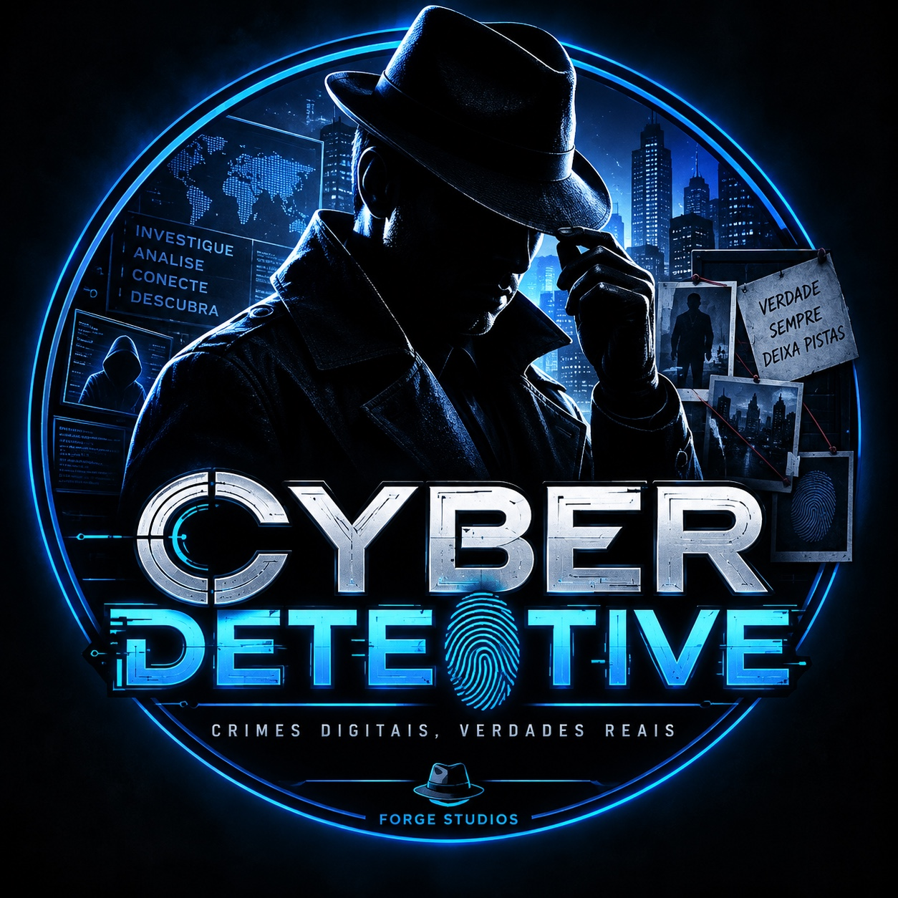
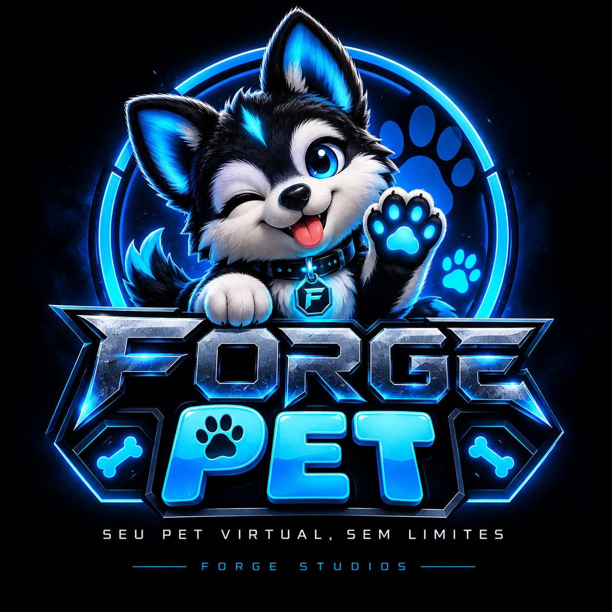
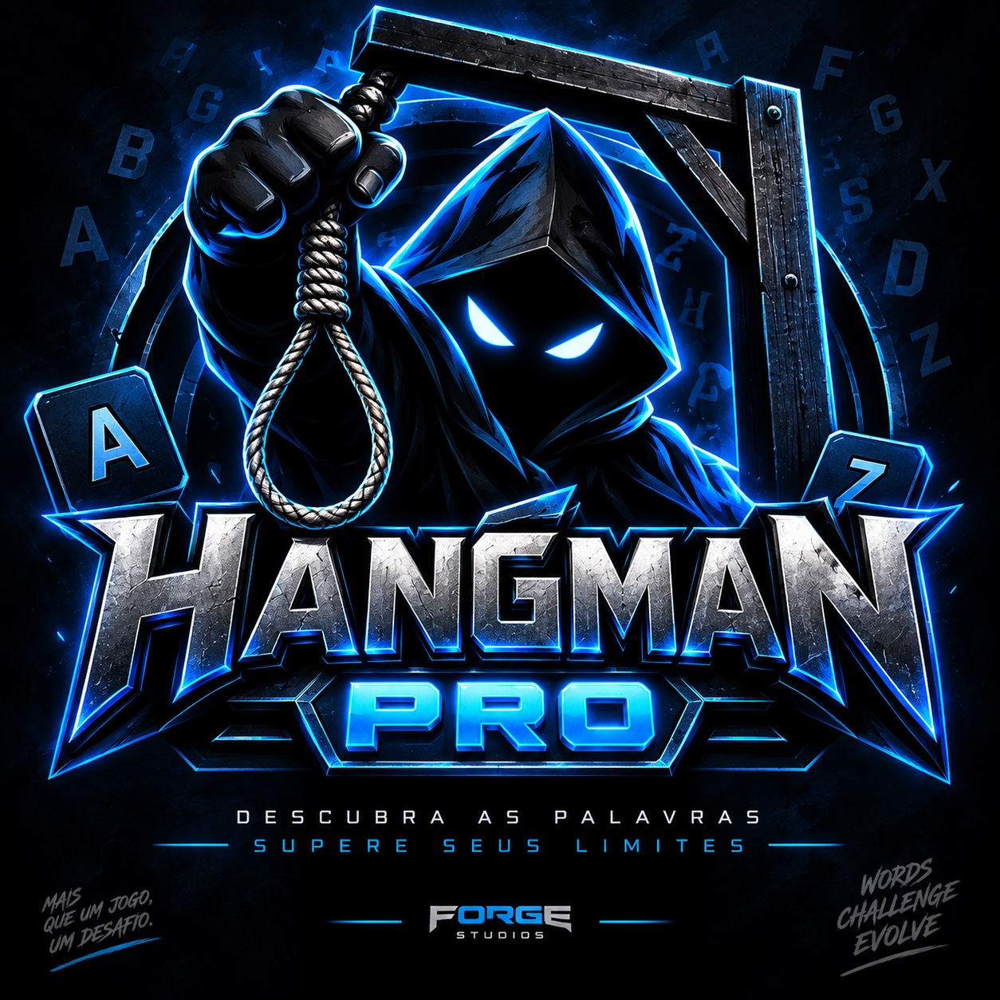
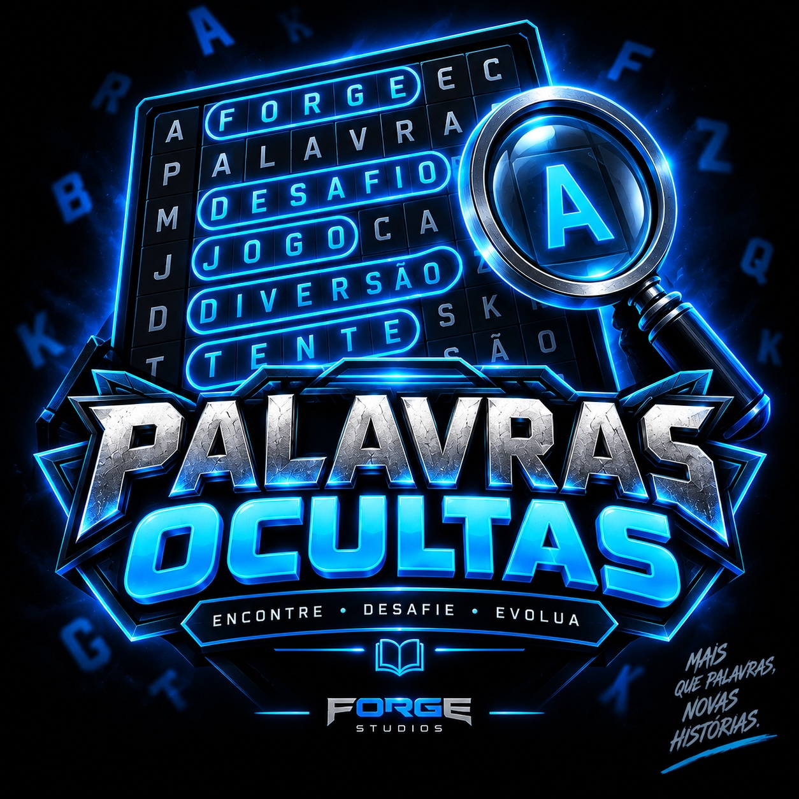

▶
Cyber Detective
Investigue casos, conecte pistas e descubra a verdade por trás de crimes digitais.
Jogar agora → FORGEGAME CENTER
Explorar →
FORGEGAME CENTER
Explorar →
Bem-vindo ao Forge Game Center. Descubra nossos jogos, acompanhe os projetos em desenvolvimento e entre diretamente nas experiências da Forge Studios.

Investigue casos, conecte pistas e descubra a verdade por trás de crimes digitais.
Jogar agora →
Cuide, alimente, brinque e acompanhe a evolução do seu pet em uma experiência 3D.
Em desenvolvimento
O clássico jogo da forca transformado em uma experiência com desafios e progressão.
Em desenvolvimento
Encontre palavras escondidas, complete fases e desafie sua pontuação.
Em desenvolvimentoExperiência de pet virtual em 3D.
Jogo de palavras com progressão.
Puzzle de palavras e desafios.
O projeto está sendo desenvolvido para uma experiência de pet virtual mais interativa.
Hangman Pro e Palavras Ocultas estão em produção e fazem parte do catálogo futuro.
O primeiro jogo disponível no Game Center já pode ser acessado diretamente pelo portal.
Primeiro jogo disponível no Forge Game Center.
Desenvolvimento da experiência 3D e sistemas do pet.
Gameplay, fases, progressão e identidade visual.
Grade, fases, desafios e evolução do jogador.
Projetos experimentais, protótipos e novas ideias podem nascer aqui antes de virarem jogos oficiais.
O Forge Game Center é o portal da Forge Studios para reunir nossos projetos. Não existe login no portal: cada jogo possui seu próprio sistema de conta e progresso.